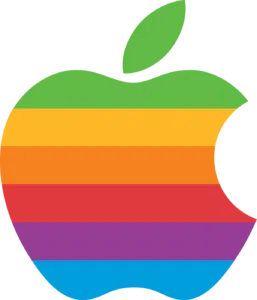
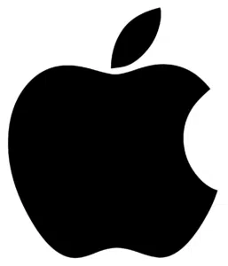

O Início: Uma Homenagem a Isaac Newton (1976)
O primeiro logotipo da Apple, criado em 1976 por Ronald Wayne, um dos cofundadores da empresa, era muito distante da simplicidade que hoje associamos à marca. Tratava-se de uma imagem complexa, em estilo de gravura, que retratava o físico e matemático Isaac Newton sentado sob uma macieira, no exato momento em que uma maçã está prestes a cair sobre sua cabeça – uma clara alusão à descoberta da lei da gravidade. A imagem era emoldurada por uma faixa que continha a inscrição "Apple Computer Co.". Embora artisticamente elaborado, o logotipo era detalhado demais para ser facilmente reproduzido em diferentes tamanhos e materiais, um requisito essencial para uma marca em ascensão. Steve Jobs, com sua visão de futuro e foco na simplicidade, rapidamente percebeu que o design não era prático e decidiu que uma mudança era necessária.
A Chegada do Ícone: A Maçã Arco-Íris de Rob Janoff (1977)
Em 1977, Jobs contratou o designer Rob Janoff para criar uma nova identidade visual para a Apple. O resultado foi o icônico logotipo da maçã com uma mordida, adornado com listras horizontais nas cores do arco-íris. Este design marcou um ponto de virada fundamental para a imagem da empresa. A escolha da maçã era uma referência direta ao nome da empresa, mas a mordida, segundo Janoff, tinha um propósito prático e conceitual. Primeiramente, a mordida evitava que a silhueta da maçã fosse confundida com a de uma cereja ou outro fruto redondo. Em segundo lugar, a palavra "mordida" em inglês, "bite", soava exatamente como "byte", um termo fundamental no universo da computação, criando um trocadilho inteligente e relevante. As cores do arco-íris, por sua vez, tinham um significado especial. Elas foram escolhidas para destacar a capacidade do computador Apple II de exibir gráficos coloridos, um diferencial significativo na época. As listras coloridas transmitiam uma imagem de modernidade, humanidade e acessibilidade, quebrando a percepção dos computadores como máquinas frias e complexas.
Mitos e Lendas: Turing e a Bandeira do Orgulho
Ao longo dos anos, diversas teorias surgiram para explicar o significado por trás do logotipo. Uma das mais difundidas é a de que a maçã mordida seria uma homenagem a Alan Turing, o pai da computação moderna, que morreu após comer uma maçã envenenada com cianeto. No entanto, o próprio Rob Janoff já desmentiu essa teoria em várias ocasiões. Outra especulação popular associava as cores do arco-íris à bandeira do orgulho LGBTQIA+. Embora a Apple sempre tenha sido uma empresa defensora da diversidade, a bandeira do orgulho só foi desenhada em 1978, um ano após a criação do logotipo da Apple, o que invalida essa conexão direta.
A Era da Simplicidade: Do Monocromático ao Minimalismo Atual (1998 - Hoje)
Com o retorno de Steve Jobs à Apple em 1997, a empresa passou por uma grande reestruturação. A identidade visual também foi repensada para refletir uma nova era de produtos com design mais limpo e sofisticado. Em 1998, o logotipo da maçã perdeu suas cores vibrantes e adotou uma versão monocromática, inicialmente em um tom azul translúcido para acompanhar o lançamento do iMac G3. Posteriormente, o logotipo passou por variações em preto, branco e em tons metálicos com efeito de vidro, sempre mantendo a forma icônica da maçã mordida. Essas mudanças refletiam a estética minimalista e elegante dos produtos da Apple, como o iPod, o iPhone e o MacBook. Atualmente, a Apple utiliza predominantemente uma versão flat (plana) e monocromática do seu logotipo, geralmente em preto, branco ou cinza. Essa simplicidade extrema confere à marca um ar de sofisticação e atemporalidade, tornando-a instantaneamente reconhecível em qualquer contexto, com ou sem o nome da empresa ao lado. A jornada do logotipo da Apple, de uma ilustração detalhada a um símbolo minimalista, é uma poderosa narrativa sobre a importância do design na construção de uma marca forte e duradoura. Para um site que conta essa história, explorar cada fase, seus significados e os mitos que a cercam, é a chave para cativar o leitor e demonstrar a genialidade por trás de um dos logotipos mais famosos do mundo.